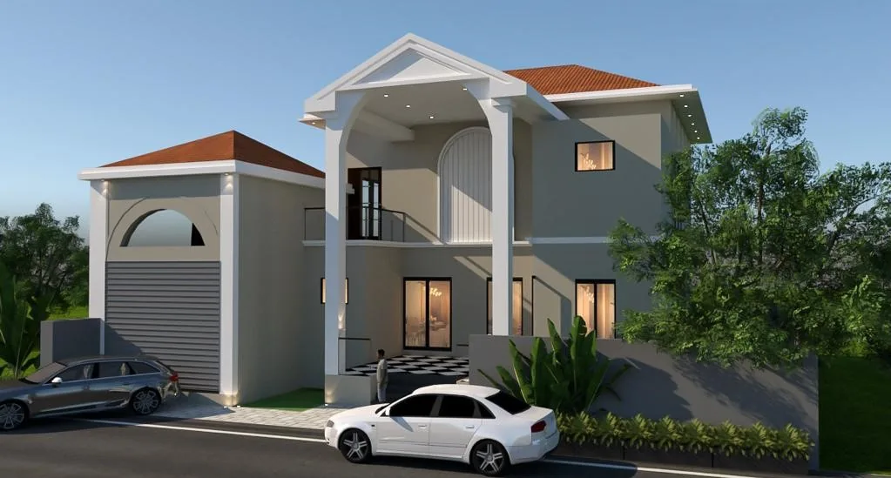
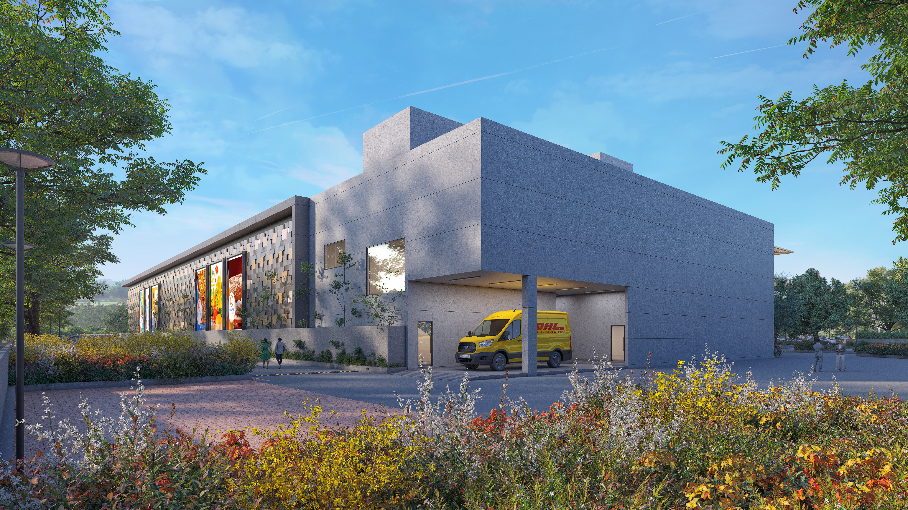
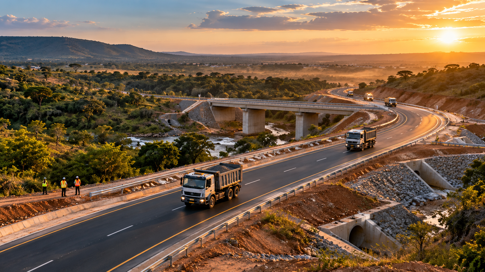

02 / CAPABILITIESPEOPLE · PLANT · DELIVERY
BUILT TO GET THE WORK DONE
From ground
to delivery.
Four development verticals, supported by equipment and maintenance
capability. Explore the work and identify the right enquiry path.
Residential and commercial visuals now use client-supplied project
imagery. Industrial and infrastructure imagery remains illustrative
until AID provides approved project-specific visuals.
FOUR DEVELOPMENT VERTICALSCONNECTED AREAS OF WORK

01 / RESIDENTIAL
PLACES TO LIVE
Residential
development.
Villas, guest houses and residential communities.
Use this area to present approved residential work, photography,
scale and design or quality standards provided by AID.
Enquire about residential ↗
 02 / COMMERCIAL
02 / COMMERCIAL
PLACES TO DO BUSINESS
Commercial
development.
Retail, leisure, office and mixed-use environments.
The proposal identifies Jambo Mart retail developments in Kolwezi
and Fungurume. Confirm project details and the approved public
naming before adding case studies.
Enquire about commercial ↗

03 / INDUSTRIAL
PLACES THAT PRODUCE
Industrial
development.
Facilities and sites planned around operational needs.
Content may cover manufacturing plants, warehouses, distribution
centres and maize mill installations, with approved images and
documented scope.
Enquire about industrial ↗

04 / INFRASTRUCTURE
CONNECTIONS THAT MATTER
Infrastructure
development.
Road construction, site preparation and essential connections.
The proposal lists road construction, bush clearing, land
levelling and utilities. Add only confirmed project examples and
technical details.
Enquire about infrastructure ↗
FLEET & EQUIPMENT
Resources to support delivery.
Equipment categories listed in the website proposal. Confirm current
inventory and specifications before launch.
01
Earthmoving
Caterpillar excavators (20–35 t) · D8 dozers · 16H motor graders
↗
02
Construction vehicles
TLBs · Compactors · Other construction vehicles
↗
03
Transport and lifting
Tippers (proposal lists 40-ton GVW) · Volvo 440 HP tractor units
· Mobile cranes
↗
04
Agriculture and concrete
John Deere tractors (proposal lists 75–640 HP) · Mobile concrete
batching plants
↗
05
Equipment support
In-house maintenance team
↗
FLEET FIGURESPROPOSAL-SUPPLIED · VERIFY
15Construction vehicles stated in proposal
15Tippers stated in proposal
30Volvo 440 HP tractor units stated in proposal
55John Deere tractors stated in proposal
20–35 tExcavator range stated in proposal
75–640 HPTractor power range stated in proposal
All quantities, models, terminology and availability must be confirmed
against AID’s current fleet inventory.
PROJECT ENQUIRIES
What are you looking to build?
Tell us the development vertical, location and project scope.
Discuss a project ↗